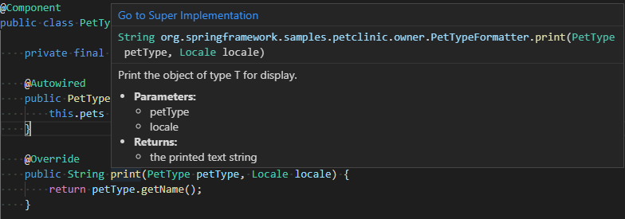
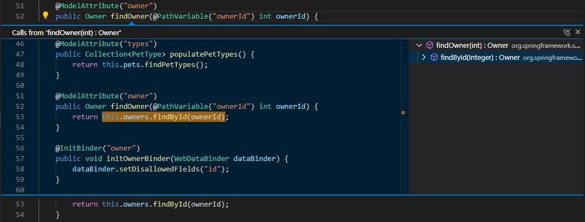
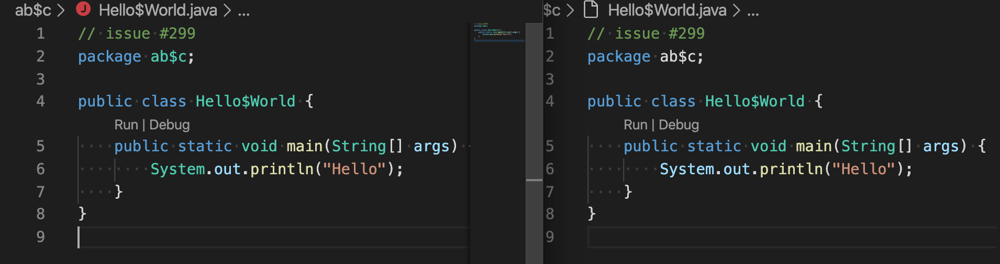
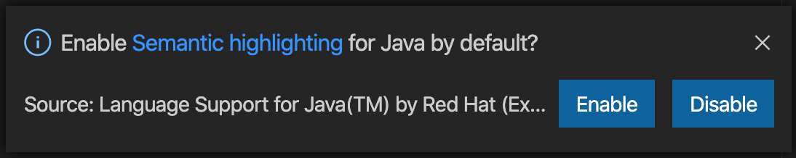
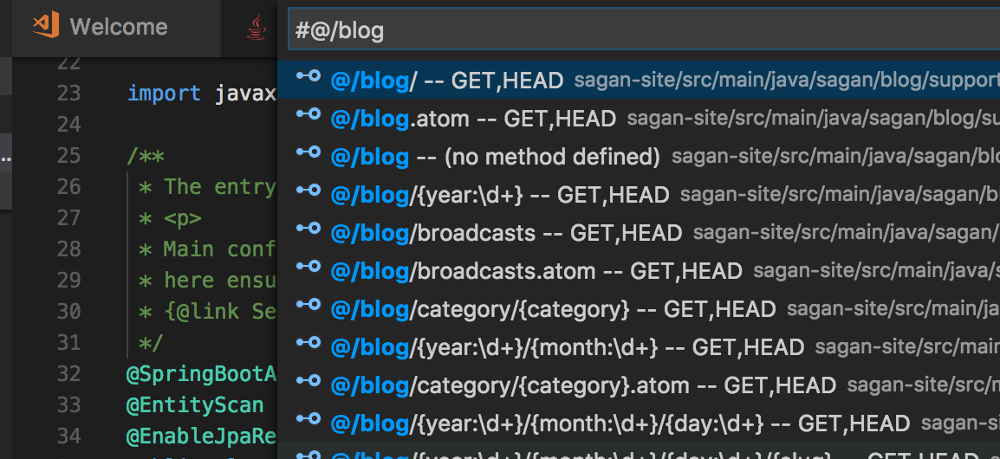
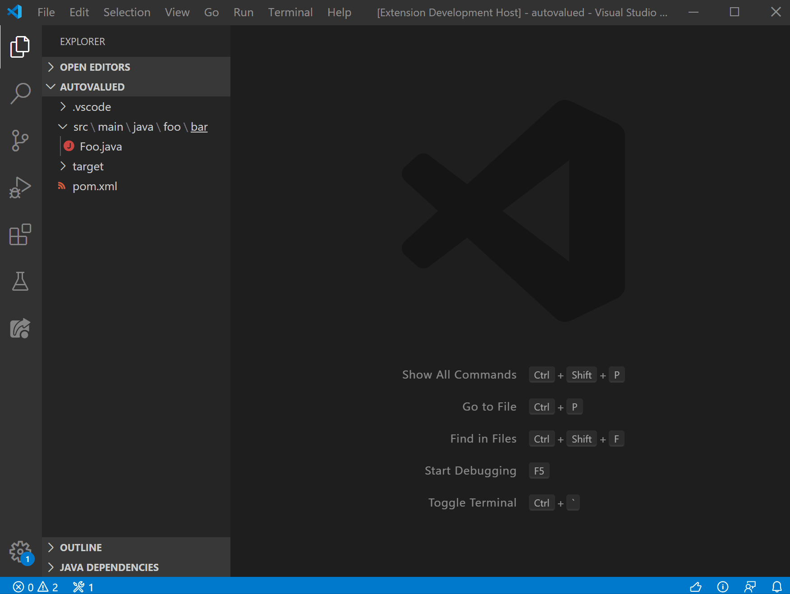
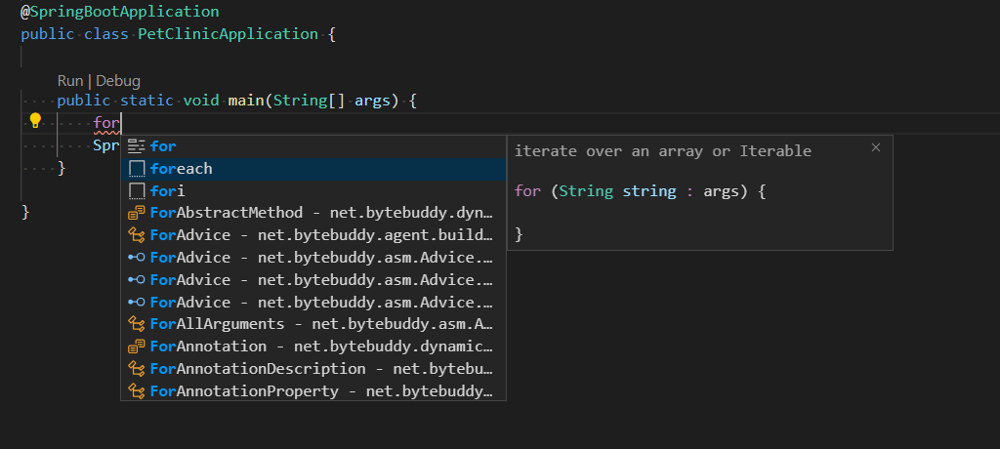

Navigate and edit Java source code
Visual Studio Code is a source code editor first and foremost with rich editing features. In this document, we will go through a few Java-specific features, which are helpful when working with Java.
If you run into any issues when using the features below, you can contact us by clicking the Report an issue button below.
Code navigation
With the Outline view, you can conveniently navigate your methods within the same class. Project view also provide a great overview of your project. As a Java editor, it also supports CodeLens (references) and Javadoc hovers and highlights out of box.
Once you open your Java project or any source files with VS Code, all code navigation features as well as syntax check and documentation (hover to see Javadoc) would be available immediately by its Lightweight Mode.
Search for symbols
You can search for symbols in the current file or workspace to navigate your code more quickly.
To search for a symbol in the current file, use Quick Open (kb(workbench.action.quickOpen)) then enter the '@' command, then enter the name of the symbol you're looking for. A list of potential matches will appear and be filtered as you type. Choose from the list of matches to navigate to its location.
To search for a symbol in the current workspace, start by pressing kb(workbench.action.showAllSymbols), then enter the name of the symbol. A list of potential matches will appear as before. If you choose a match that was found in a file that's not already open, the file will be opened before navigating to the match's location. Alternatively, you can also use Quick Open (kb(workbench.action.quickOpen)) then enter the '#' command to search the current workspace. kb(workbench.action.showAllSymbols) is just the shortcut for the '#' commands, so everything works the same.
Peek Definition
You can take a quick look at how a symbol was defined by using the Peek Definition feature. This feature displays a few lines of code near the definition inside a peek window, so you can take a look without navigating away from your current location.
To peek at a symbol's definition, place your cursor on the symbol anywhere it's used in your source code and then press kb(editor.action.peekDefinition). Alternatively, you can choose Peek Definition from the context menu (right-click, then choose Peek Definition).
Go to Definition
You can also quickly navigate to where a symbol is defined by using the Go to Definition feature.
To go to a symbol's definition, place your cursor on the symbol anywhere it is used in your source code and then press kb(editor.action.revealDefinition). Alternatively, you can choose Go to Definition from the context menu (right-click, then choose Go to Definition). When there's only one definition of the symbol, you'll navigate directly to its location, otherwise the competing definitions are displayed in a peek window as described in the previous section and you have to choose the definition that you want to go to.
Go to Super Implementation
You can keep track of class implementations and overriding methods by clicking the Go to Super Implementation link on hover.

Call Hierarchy
A Call Hierarchy view shows all calls from or to a function and allows you to drill into callers of callers and call of calls. Right-click on a function and select Peek > Peek Call Hierarchy.

You can also right-click in a function body and pick Show Call Hierarchy.

Folding regions
Folding regions allows you to fold or unfold code snippet to better view the source code.
Smart Selection
With Smart Selection (semantic selection), you can expand or shrink the selection range based on the semantic information of the caret position in your source code.
- To expand the selection, use
kb(editor.action.smartSelect.expand). - To shrink the selection, use
kb(editor.action.smartSelect.shrink).
Semantic Highlighting
Syntax highlighting is a very important feature that allows you to read code more efficiently. With the help of Semantic Highlighting, VS Code can provide more accurate source code coloring based on symbol information from the Java language service.
Below is just one example, left is the behavior after enabling semantic highlighting and right is the one with only syntax highlighting.

To enable semantic highlighting, you can toggle the java.semanticHighlighting.enabled setting. You will also be prompted to enable or disable semantic highlighting on startup:

You can learn more about the details of Java semantic highlighting on the Java extension wiki.
Navigating code with Spring Boot
The Spring Boot Tools extension provides enhanced navigation and code completion support for Spring Boot projects.
@/shows all defined request mappings (mapped path, request method, source location)@+shows all defined beans (bean name, bean type, source location)@>shows all functions (prototype implementation)@shows all Spring annotations in the code

To learn more about Spring Boot support with Visual Studio Code, read Spring Boot in Visual Studio Code.
Code editing
Editing code is also easy with IntelliSense for smart code completions and signature details. You can use code snippets as well as various code actions such as generating Getters/Setters and organizing imports to further boost your productivity.
Java support in Visual Studio Code detects issues within your code automatically, and provides you with Quick Fix suggestions.
For more details about refactoring and code actions, see Refactoring and Source Actions.
IntelliSense
Code completion in Visual Studio Code for Java is provided by Language Support for Java(TM) by Red Hat. The extension is powered by the same Java development tools (JDT) behind Eclipse, so you can expect the same level of support.
In addition, there's also AI-assisted IntelliSense called IntelliCode. It saves you time by putting what you're most likely to use at the top of your completion list. IntelliCode recommendations are based on thousands of open-source projects on GitHub each with over 100 stars, so it's trained on the most common usages from high quality projects. When combined with the context of your code, the completion list is tailored to promote those practices. Here's IntelliCode for Java in action.
IntelliCode works well with popular Java libraries and frameworks like Java SE and Spring. It will help you whether you are doing monolithic web apps or modern microservices.
Create new file
VS Code supports applying templates when you create a Java source file. When you create a .java file in the File Explorer, the language server will automatically generate the class body, and fill the package info for you:

Code snippets
Visual Studio Code supports a wide range of popular Java code snippets to make you more productive, such as class/interface, syserr, sysout, if/else, try/catch, static main method. Leveraging information from Java language server, it also provides a preview of the code snippet during the selection.
